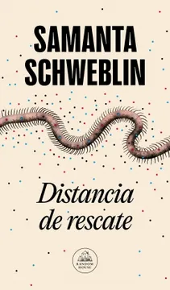

Distancia de rescate
Samanta Schweblin
De qué trata
David, apenas un niño, se sienta al lado de Amanda, una joven que agoniza en el hospital de un pequeño pueblo rural. Ella no es su madre. Él no es su hijo. Pero entre ambos se despliega una trama inquietante de almas rotas, campos envenenados y una familia desesperada. Distancia de rescate es una pesadilla para desvelados, una advertencia.
Por qué dialoga con Latinoamérica hoy
«Distancia de rescate» es el vínculo invisible que mantiene a una madre unida a sus hijos, permitiéndoles cuidarlos y protegerlos a pesar de la distancia física. Representa la obsesión de los padres por calcular cuánto tiempo tardarían en proteger a sus hijos ante cualquier peligro, una alarma mental que, según la autora, nunca se apaga. La novela se clasifica dentro del género horror latinoamericano y gótico contemporáneo, destacando por su atmósfera ambigua y perturbadora, donde las vidas de dos madres se entrelazan tras la muerte de un niño por envenenamiento. La autora utiliza el entorno rural no como un idilio, sino para denunciar el abuso y la destrucción de la naturaleza. Los elementos perturbadores parecen recursos literarios, pero son una realidad cotidiana en el campo argentino vinculada al uso de pesticidas, lo que hace que la historia sea aún más aterradora por su veracidad.